CFGS Desarrollo de Aplicaciones Web
- CFGS Desarrollo de Aplicaciones Web
| DAW/DWES Tema2 |
|---|
 |
| INSTALACIÓN, CONFIGURACIÓN Y DOCUMENTACIÓN DE ENTORNO DE DESARROLLO Y DEL ENTORNO DE EXPLOTACIÓN |
1. Entorno de Desarrollo
1.1 Ubuntu Server 24.04.3 LTS
Este documento es una guía detallada del proceso de instalación y configuración de un servidor de aplicaciones en Ubuntu Server utilizando Apache, con soporte PHP y MySQL
1.1.1 Configuración inicial
Nombre y configuración de red
Nombre de la máquina: daw-used
Memoria RAM: 2G
Particiones: 150G(/) y resto (/var)
Configuración de red interface: enp0s3
Dirección IP :10.199.10.22/22
GW: 10.199.8.1/22
DNS: 10.151.123.21 y 10.151.126.21
Para comprobar esto usamos:
hostname # Para ver el nombre de la maquina
ip a # Para ver la IP y interface
ip r # Par ver la IP, interface y gateway
resolvectl # Para ver el DNS
df -h # Para ver las particiones
fdisk -l # # Para ver las particiones (fromato mas limpio)
cat /etc/os-release # Ver la verison del SO
Cambiamos el nombre de la maquina con:
sudo hostnamectl set-hostname <nombre>
sudo nano /etc/hosts
Editamos el fichero de configuración del interface de red /etc/netplan, con estos datos:
# This is the network config written by 'subiquity'network:
network:
version: 2
ethernets:
enp0s3:
addresses:
- 10.199.10.22/22
nameservers:
addresses:
- 10.151.123.21
- 10.151.126.21
search: [jesus.local]
routes:
- to: default
via: 10.199.8.1
Actualizar el sistema
sudo apt update && sudo apt upgrade -y
Configuración fecha y hora
# Comprobamos la fecha con:
date
En caso de que este mal hacemos esto: Establecer fecha, hora y zona horaria
# Ponemos la zona horaria correcta para cambiar la hora
sudo timedatectl set-timezone Europe/Madrid
# Comprobamos que la fecha y/o hora han cambiado con:
date
Cuentas administradoras
- root(inicio)
- miadmin/paso
- miadmin2/paso
La cuenta root viene por defecto. Las otras dos las creamos con el comando:
sudo adduser <nombre_usuario>
# Te pedira contraseña, y el resto de cosas serán opcionales (teléfono, correo, etc)
# Para hacerlo administrador usamos:
sudo usermod -aG sudo,adm,cdrom,dip,plugdev,lxd <nombre_usuario>
o con:
sudo useradd -m -d </ruta/del/home> -s </bin/bash> -G <grupo/s> <usuario>
sudo passwd <usuario> # Para poner la contraseña
sudo chown -R <usuario>:<grupo> </ruta/del/home> # Para cambiar el dueño de la carpeta home
Cortafuegos (UFW)
Instalacion
sudo apt update
sudo apt install ufw # Instalamos UFW si no está instalado
Configuracion
sudo ufw enable # Activamos el cortafuegos
sudo ufw allow 22 # Abrimos el puerto 22 (SSH)
Para eliminar reglas específicas (por ejemplo IPv6 o cualquier otra):
sudo ufw status numbered # Mostramos reglas con número
sudo ufw delete 2 # Eliminamos la regla con el número correspondiente
Monitorizacion
sudo ufw status verbose # Mostramos el estado detallado del cortafuegos y las reglas activas
Mantenimiento
sudo ufw disable # Desactivamos el cortafuegos temporalmente
sudo ufw reset # Reseteamos todas las reglas a la configuración inicial
SSH
Instalacion
sudo apt update
sudo apt install openssh-server # Instalamos el servidor SSH
Configuracion
sudo nano /etc/ssh/sshd_config # Archivo de configuración SSH
sudo systemctl restart ssh # Reiniciamos el servicio para aplicar cambios si hacemos
Monitorizacion
sudo systemctl status ssh # Comprobamos el estado del servicio
Mantenimiento
sudo systemctl enable ssh # Habilitamos que SSH se inicie al arrancar
sudo systemctl disable ssh # Deshabilitamos el inicio automático si se necesita
sudo systemctl restart ssh # Reiniciamos el servicio si hay problemas
Antivirus
Instalacion
Instalaremos el Antivirus ClamAV:
sudo apt update && sudo apt install -y clamav
Configuracion
Si no quieres cambiar nada, puedes verificar la configuración.
cat /etc/clamav/clamd.conf # Mostramos la configuración del demonio
cat /etc/clamav/freshclam.conf # Mostramos la configuración de actualizaciones
Si quieres actualizar la base de datos de los virus:
sudo systemctl stop clamav-freshclam # Detenemos el servicio de actualizaciones
sudo freshclam # Actualizamos la base de datos de virus
sudo systemctl start clamav-freshclam # Volvemos a iniciar el servicio
Monitorizacion
sudo systemctl status clamav-daemon # Comprobamos el estado del servicio ClamAV
sudo systemctl status clamav-freshclam # Comprobamos el estado del servicio de actualizaciones
Mantenimiento
sudo systemctl enable clamav-daemon # Habilitamos el demonio al inicio del sistema
sudo systemctl disable clamav-daemon # Deshabilitamos el inicio automático si se necesita
sudo systemctl restart clamav-daemon # Reiniciamos el servicio si hay problemas
1.1.2 Servidor web (Apache)
Instalación
sudo apt update
sudo apt install apache2 -y # Instalamos Apache
Configuracion
cat /etc/apache2/apache2.conf # Mostramos la configuración principal
cat /etc/apache2/sites-available/000-default.conf # Configuración del sitio por defecto
Para aplicar los cambios despues de editar usamos:
sudo apache2ctl configtest # Comprobamos que no de errores = "Syntax OK"
sudo systemctl restart apache2 # Reiniciamos el servicio para aplicar cambios
Abrimos el puerto 80:
sudo ufw allow 80 # Abrimos el puerto 80 (HTTP)
sudo ufw status numbered # Mostramos reglas con número
sudo ufw delete 3 # Eliminamos la regla IPv6
Monitorizacion
sudo systemctl status apache2 # Comprobamos si Apache está activo
sudo ufw status | grep "80" # Verificamos que el puerto 80 está escuchando
Mantenimiento
sudo systemctl start apache2 # Iniciamos el servicio si está detenido
sudo systemctl stop apache2 # Detenemos el servicio
sudo systemctl restart apache2 # Reiniciamos el servicio
sudo systemctl enable apache2 # Habilitamos el inicio automático al arrancar
sudo systemctl disable apache2 # Deshabilitamos el inicio automático si se necesita
Los archivos de configuracion de Apache se encuentran en /etc/apache2/:
apache2.conf: es el archivo de configuracion inicial. Es el primer fichero que se ejecuta cuando arrancamos el servidor.ports.conf: donde se definen los puertos en los que Apache escuchará las conexionesmods-available/: Contiene todos los módulos de Apache que están instalados en el sistema.mods-enabled/: Contiene enlaces simbólicos a los módulos de mods-available/ que están activos, es decir, cargados y funcionando en el servidor.conf-available/: Almacena archivos de configuración global mediante enlaces simbólicos influyendo en la configuración general del servidor.conf-enabled/: Contiene enlaces simbólicos a los archivos de conf-available/ que están activos, aplicando su configuración al servidor.sites-available/: Guarda archivos de configuración de sitios virtuales mediante enlaces simbólicos, permitiendo configurar diferentes sitios alojados en el mismo servidorsites-enabled/: Contiene enlaces simbólicos a los archivos de sites-available/ que están activos, habilitando los sitios virtuales correspondientes.
Para comprobar que los cambios en la documentacion funcionnan correctamente usamos:
sudo apache2ctl configtest
Virtual Hosts
Permisos y usuarios
- operadorweb/paso
- operadorweb2/paso
- operadorweb3/paso
Creamos un usuario llamado operadorweb que tenga el grupo www-data.
# Creamos el usuario
sudo useradd -m -d /var/www/html/ -s /bin/bash -G www-data operadorweb
# Le ponemos contraseña
sudo passwd operadorweb
# Cambiamos el propietario de su carpeta home con:
sudo chown -R operadorweb:www-data /var/www/html/
# Y los permisos con:
sudo chmod -R 775 /var/www/html
Y habilitamos el puerto 80 en el UFW si no esta ya.
1.1.3 PHP-FPM
Instalacion
# --- Actualizar paquetes y preparar el sistema ---
# Se asegura que todos los paquetes estén actualizados y se instalan
# herramientas necesarias para añadir repositorios externos.
sudo apt update
sudo apt install software-properties-common -y
# --- Añadir repositorio de PHP actualizado ---
# Se añade el PPA de Ondřej Surý para poder instalar versiones recientes
# de PHP y se verifica que el repositorio se haya añadido correctamente.
sudo add-apt-repository ppa:ondrej/php -y
ls /etc/apt/sources.list.d/ | grep ondrej
sudo apt update
# --- Instalar PHP 8.3 y PHP-FPM ---
# Se instala PHP 8.3 junto con FPM, que permite que Apache gestione PHP
# de forma más eficiente y segura que el módulo tradicional.
sudo apt install libapache2-mod-php8.3 php8.3-fpm -y
# --- Configurar Apache para usar PHP-FPM ---
# Se habilita el proxy para PHP-FPM, se desactiva mpm_prefork y el módulo
# PHP tradicional y se activa mpm_event, optimizando Apache para trabajar
# con PHP-FPM.
sudo a2enmod proxy_fcgi
sudo a2dismod mpm_prefork
sudo a2dismod php8.3
sudo a2dismod mpm_prefork
sudo a2enmod mpm_event proxy_fcgi
sudo a2enconf php8.3-fpm
# --- Reiniciar y recargar Apache ---
# Se aplican todos los cambios de configuración reiniciando Apache y
# recargando servicios.
sudo systemctl restart apache2
sudo systemctl reload apache2
Configuracion
En /etc/php/8.3/fpm hacemos una copia de seguridad de php.ini y despues lo editamos cambiando estos valores:
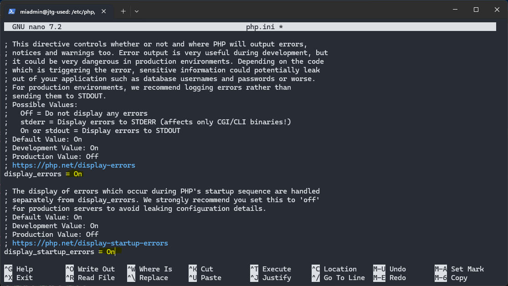
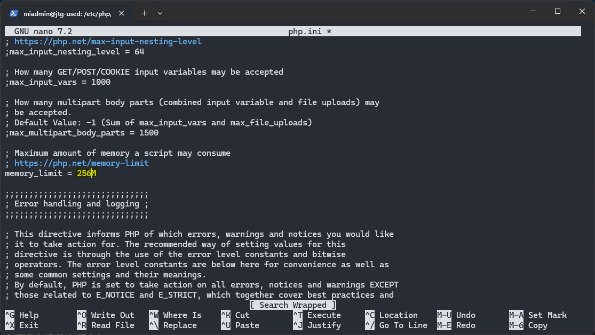
Y reiniciamos el servicio para aplicar los cambios a la configuracion con:
sudo systemctl restart php8.3-fpm
1.1.4 MySQL
1.1.5 XDebug
1.1.6 DNS
1.1.7 SFTP
1.1.8 Apache Tomcat
1.1.9 LDAP
1.2 Windows 11
1.2.1 Configuración inicial
Nombre y configuración de red
Cuentas administradoras
1.2.2 Navegadores
1.2.3 MovaXterm
Para crear una nueva sesion de usuario le damos aqui:
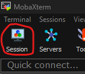
Se abrira un menu para elegir el tipo de conexion.
Elegiremos SSH y pondremos la IP del servidor, marcamos la casilla y ponemos nuestro uruario.
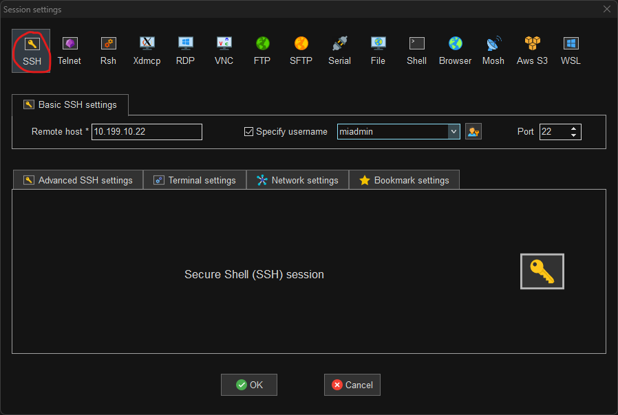
Al darle a Ok nos pedira la contraseña. Se la ponemos y ya estaria creada la sesion para poder administrar el servidor.
1.2.4 Netbeans
Creacion de proyectos
Clicamos en el boton de crear un nuevo proyecto.
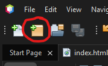
Seleccionamos el tipo de proywcto:
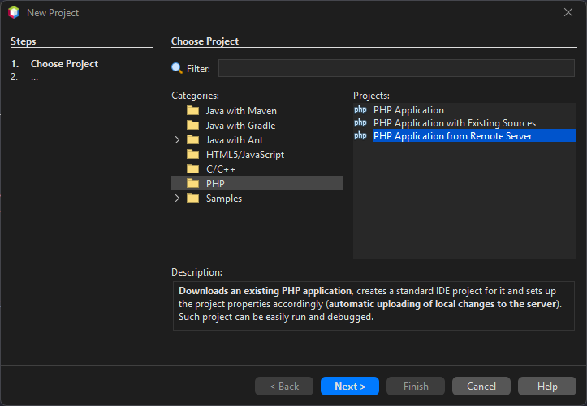
Seleccionamos el nombre del proyecto y en la carpeta donde se va a guardar
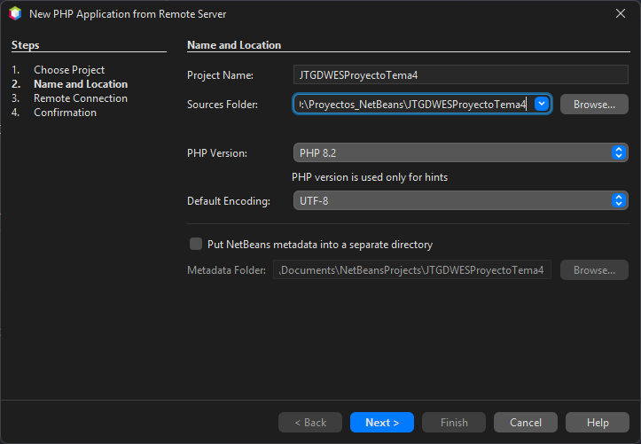
Seleccionamos la direccion de nuestro servidor y a que carpeta se subiran los archivos
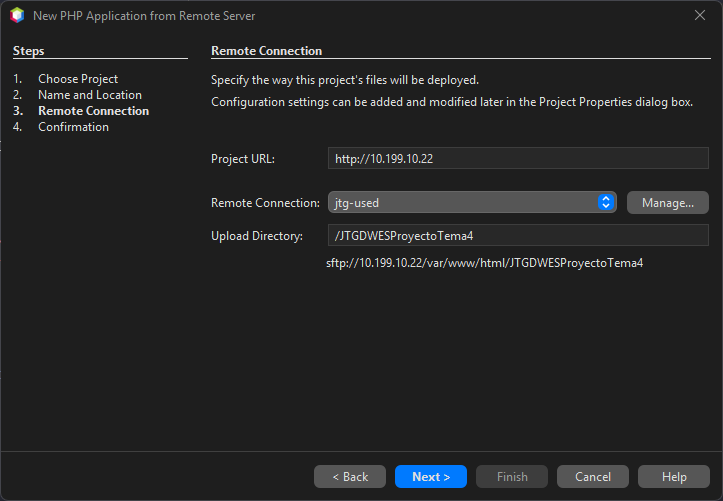
Confirmamos el mensaje que aparece y le damos a finalizar.
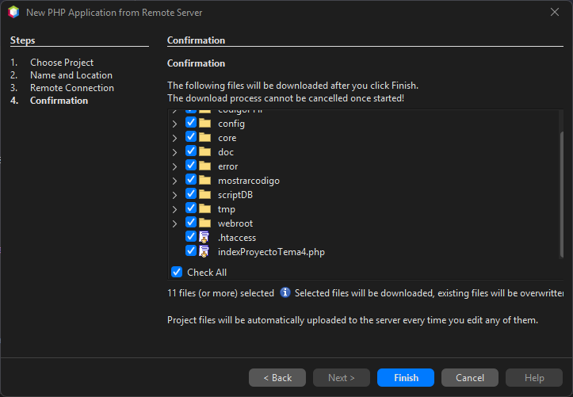
Y ya lo tenemos
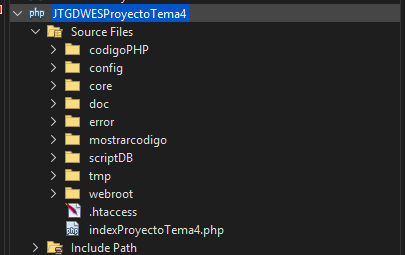
Eliminacion de proyectos
Le damos click derecho al proyecto que queramos eliminar.
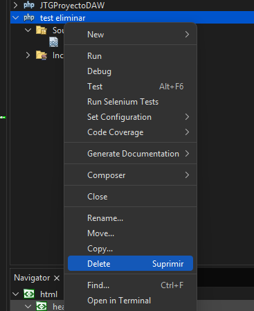
Una vez le damos, nos preguntara si queremos tambien eliminar todos los archivos (locales). Lo seleccionamos si queremos y le damos a “Yes”. Para que se elimine
Informacion del IDE
Pagina Oficial: https://netbeans.apache.org/
Version: 20
Link Descarga Version: https://netbeans.apache.org/front/main/download/nb20/
Modulos Instalados: 0
1.2.5 Visual Studio Code
2. GitHub
3.Entorno de Explotación
Jesús Temprano Gallego
Curso: 2025/2026
2º Curso CFGS Desarrollo de Aplicaciones Web
Despliegue de aplicaciones web